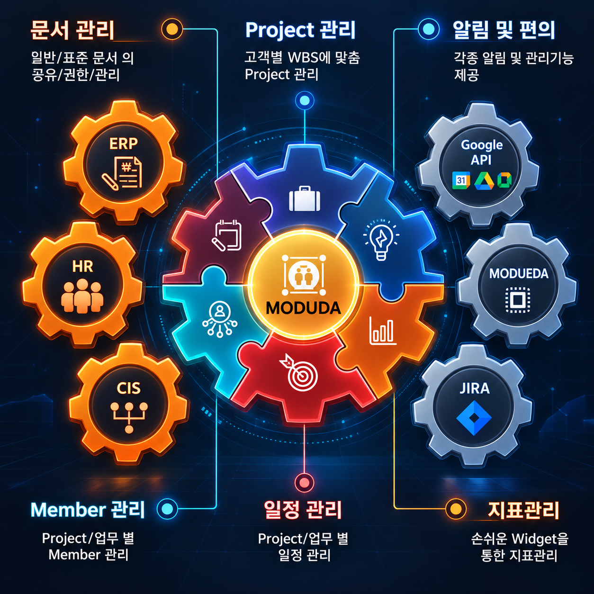
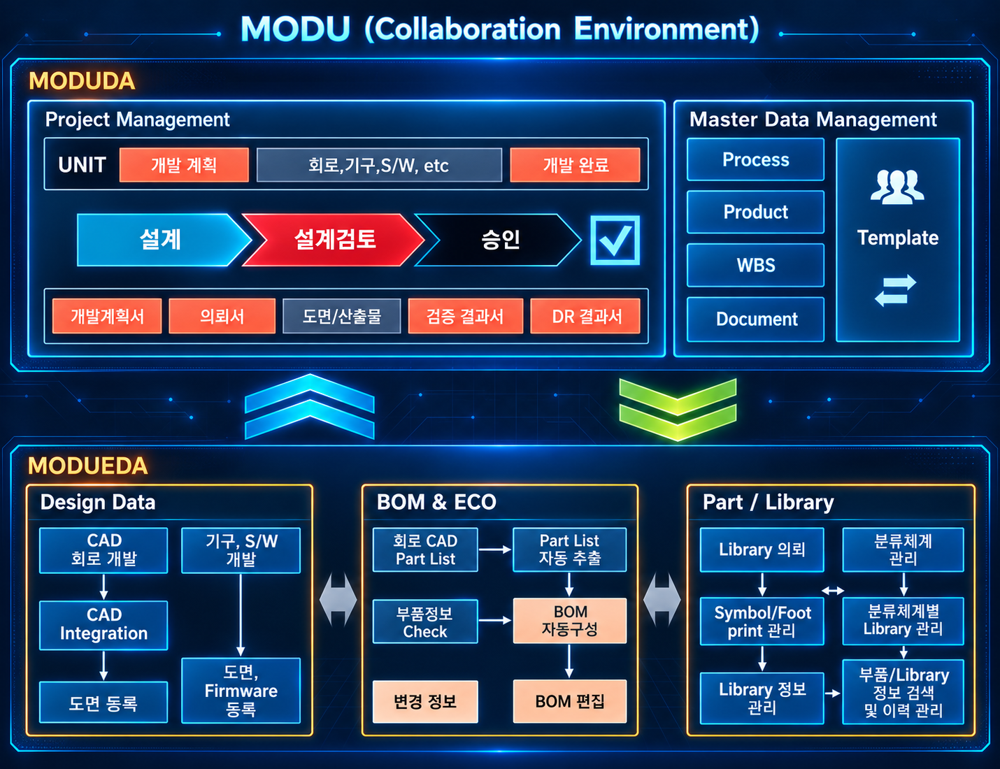

MODU DA 프로젝트 · 문서 · 일정 관리 협업 솔루션
프로젝트, 문서, 일정 관리를 하나의 흐름으로 연결하여 팀 협업을 강화하고
많은 업무 속에서도 혼선을 줄일 수 있는 업무 허브 환경을 제공합니다.
프로젝트·업무·일정·문서를 한 곳에서 연결하는 통합 협업 환경
기존 업무 시스템 및 외부 서비스와 연계 가능한 업무 허브 구조
문서 공유, 권한 관리, 검색 기반으로 조직 지식을 체계적으로 축적
업무 히스토리와 데이터를 스스로 학습하여 최적의 실행 방향을 제시
핵심 기능
단순한 일정 관리 도구를 넘어, 프로젝트 운영과 커뮤니케이션 전반을 연결하는 핵심 기능을 제공합니다.

프로젝트 기반 협업
프로젝트 및 업무 과제를 중심으로 담당자, 일정, 진행 상태를 정리하고 팀 단위의 실행력을 높입니다.
지식 중심 커뮤니케이션
문서 공유와 이력 관리를 통해 논의 내용을 축적하고, 필요한 정보를 빠르게 찾아 활용할 수 있습니다.
일정 및 지표 관리
개인·팀 일정과 각종 업무 지표를 함께 관리하여 협업 상황과 우선순위를 명확하게 파악할 수 있습니다.
협업을 위한 기반 기능
업무 허브
프로젝트, 일정, 문서, 알림을 하나의 공간에서 연결합니다.
실시간 공유
업무 변경사항과 진행상황을 즉시 팀에 전파할 수 있습니다.
스마트 검색
필요한 문서와 히스토리를 빠르게 조회하여 탐색 시간을 줄입니다.
권한 관리
중요 문서를 안전하게 관리하면서 협업범위를 유연하게 조정합니다.
차세대 AI 어시스턴트
MODU DA는 단순한 관리를 넘어, 인공지능이 업무의 맥락과 파급 효과를 선제적으로 감지하여 업무를 보조하는 지능형 솔루션입니다.

맥락을 이해하는 통합 데이터 탐색
파편화된 기존 프로젝트 정보와 내부 매뉴얼, 축적된 의사결정 히스토리를 AI가 스스로 연결합니다. 필요한 핵심 정보를 재구성하여 필요할 때 즉시 제공합니다.
선제적 리스크 예측 및 최적안 제안
부품·설계·생산 등 복잡한 체인 속에서 잠재된 공급 불균형이나 변경 요소를 AI가 사전에 감지합니다. 파급 효과를 실시간으로 분석하여 최적의 대안을 자동으로 도출합니다.
자동화된 변경 영향도 및 검증 가이드
프로젝트 단계별 요구사항과 변경 사항이 발생할 때마다, 관련 산출물과 차이점을 지능적으로 파악하고 변경 초안 및 가이드를 자동으로 준비합니다.
맞춤형 자율 업무 일정 및 우선순위 수립
사용자의 업무 일지와 이메일, 커뮤니케이션 패턴을 학습하여 오늘 가장 먼저 집중해야 할 업무 플랜과 체크리스트를 인공지능이 스스로 추천합니다.
업무 연계와 운영 흐름
MODU DA는 기존 업무 시스템과의 연계, 그리고 MODU EDA와의 연결을 통해 보다 유기적인 업무 환경을 구성합니다.


연동 기반 협업 구조
기존 업무 시스템과, 그리고 MODU EDA의 문서·도면·BOM 정보와 연계하여 UNIT 기반 Workflow 안에서 보다 정확하고 상세한 커뮤니케이션 및 협업이 가능하도록 지원합니다.
업무 실행 프로세스
-
1
STEP 1
프로젝트와 과제를 등록하고 담당자, 일정, 목표를 명확히 정의합니다.
-
2
STEP 2
문서와 업무 이력을 연결하여 협업 중에 생성되는 정보를 중앙에 축적합니다.
-
3
STEP 3
기존 시스템 및 외부 서비스 연계를 통해 업무 허브로 활용 범위를 확장합니다.
-
4
STEP 4
검색, 권한 관리, 알림 기능을 통해 효과적으로 공유하고 실행 속도를 높입니다.
기대 효과
팀원들이 동일한 정보를 보면서, 같은 흐름으로 일하도록 하여 협업 품질과 업무 생산성을 높입니다.
업무 효율 향상
- 업무 현황과 일정을 파악하는 시간을 단축합니다.
- 문서 및 히스토리 검색 시간을 줄여 의사결정을 빠르게 지원합니다.
- 프로젝트 단위의 실행 관리로 우선순위 정렬이 쉬워집니다.
협업 품질 강화
- 권한 관리와 문서 공유를 통해 조직 내 지식 자산화를 촉진합니다.
- 업무 흐름과 커뮤니케이션을 연결하여 전달 누락을 줄입니다.
- 기존 시스템과의 연동으로 도입 장벽을 낮추고 활용 범위를 넓힙니다.
MODU DA는 프로젝트·문서·일정 관리를 자연스럽게 연결하여, 협업과 실행을 하나의 업무 흐름으로 통합하는 협업 솔루션입니다.